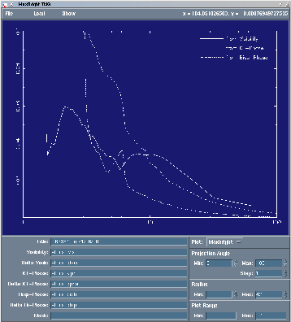
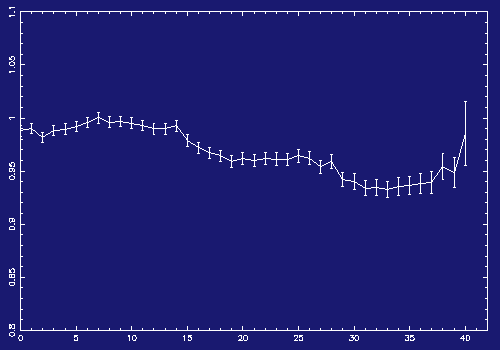
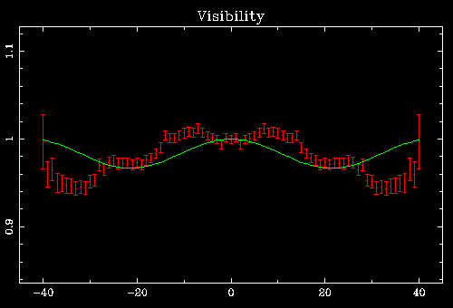
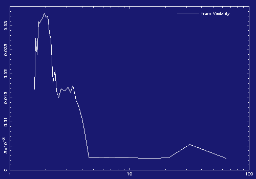
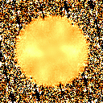
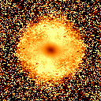
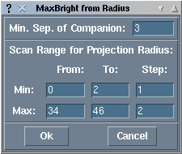

maxbright -root filename.fits_ -title "this is an example"
"filename" is the name of the average files you specified when you
told mcspeckle to create averaged files, and the title will be
printed at the top of the PS-file if you print the result of
maxbright.
Here is a scaled-down copy of maxbright's window:

The principle of the maxbright-algorithm is to determine how far the data deviate from the nominal result for a point source (visibility = 1.0, phase = 0.0) and then to determine the upper limit of the brightness for a companion that would result in just this amount of change in visibility or phase.
To explain this in more detail, let's go back to 1-dimensional scans for the moment. The 1-dimensional visibility of a real unresolved star (RXJ1539.0-2956, see Köhler et al. 2000) looks like this:
Notice the vertical scale is from 0.8 to 1.1, this is about as close to "flat" as speckle observations usually get. Now we consider the value and error of each point and assume this to be the minimum of the visibility curve of a binary. For example, the curve for the point at 21.3 looks like this:
(This plot was made with binplot, which plots positive and negative spatial frequencies. Maxbright plots only positive frequencies, since the visibility is symmetrical.)
This curve corresponds to a binary with separation 3 pixel and a flux ratio of 0.017. A brighter companion would lead to a higher amplitude of the visibility, which is clearly not consistant with the data. Maxbright repeats this for the data points at all frequencies and combines this to a "maxbright"-curve:
At 3 pixels separation, one can find our result of 0.017.
A similar method is used to derive limits from the phase.For 2-dimensional data, we reduce it to one dimension by averaging over one direction. This is not a simple cut through the image, it really means adding all pixels in one direction and then dividing by the number of pixels. Of course, we lose the spatial resolution in this direction, therefore we have to repeat this in several directions to exclude companions at all position angles. Maxbright does this automatically, it is possible to set starting and ending position angle, and the step size. The default is to consider position angles from 0 to 180 degrees in steps of 10 degrees. Since the fourier transform of a real image is hermitian, we would not get additional information from position angles larger than 180 degrees.
A more important parameter is the size of the area used for the average. Features smaller than the diffraction limit of the telescope cannot be reconstructed. The diffraction limit corresponds to a certain spatial frequency in Fourier space. For frequencies larger than this, our data does not contain any information about the object observed, but only noise. This can clearly be seen in the visibility of RXJ1539.0-2956:
Because of this, it is important to use only data points within a certain radius. (Since the mirrors of today's telescopes are round, the diffraction limit and the maximal spatial frequency do not depend on the position angle. I will have to change the program if I get data that was obtained through both mirrors of the LBT...) However, the radius where the signal-to-noise ratio becomes too bad depends not only on the diffraction limit of the telescope, but also on the atmospheric conditions during the observations. Therefore one has to inspect the data and set the maximum radius accordingly.
With adaptive optics data, there often is another problem. If the quality of the correction on object and reference is different, there is a ring-like structure in the visibility. The visibility has a local minimum at the center and rises towards larger frequencies. In normal space, this would correspond to a brightness distribution with negative brightness at some points, which is clearly not reasonable (unless someone finds an object that emits a negative number of photons). The maxbright-algorithm described above yields limits that are negative, but maxbright ignores them and inserts 0 instead. At the moment, the only solution to this problem is to mask out the local minimum in the center by using a minimal radius for the area used. This has to be done by the user, maxbright itself is not (yet) clever enough to detect this! Here is an example of one of those bad visibilities:
You might have noticed that most of the work the user has to do with maxbright is to find the optimal combination of minimum and maximum radius. There is special function in the program to find the maxima of the maxbright-curves for a range of radii. This function is called by selecting "Max from distance" in the "file" menu. A small window opens that allows to specify the range of radii used:
The "Min. Sep. of Companion" should be the number of pixels corresponding to the diffraction limit of the telescope. Of course, this depends on the wavelength, the size of the telescope, and the pixel scale of the camera, which is unknown to maxbright. The result will be a table like this:
Proj-radius from visib. at d = from phases at d = 0 ... 34 0.06341 3.200 pix 0.14898 3.765 pix 0 ... 36 0.06420 3.200 pix 0.14291 3.556 pix 0 ... 38 0.06187 3.200 pix 0.14943 3.368 pix 0 ... 40 0.05997 3.200 pix 0.15186 3.200 pix 0 ... 42 0.06054 3.200 pix 0.16551 3.048 pix 0 ... 44 0.06268 3.200 pix 0.13040 3.048 pix 0 ... 46 0.07577 3.200 pix 0.12567 3.122 pix 1 ... 34 0.06381 3.200 pix 0.14898 3.765 pix 1 ... 36 0.06458 3.200 pix 0.14291 3.556 pix 1 ... 38 0.06220 3.200 pix 0.14943 3.368 pix 1 ... 40 0.06026 3.200 pix 0.15186 3.200 pix 1 ... 42 0.06081 3.200 pix 0.16551 3.048 pix 1 ... 44 0.06289 3.200 pix 0.13040 3.048 pix 1 ... 46 0.07596 3.200 pix 0.12567 3.122 pix 2 ... 34 0.06482 3.200 pix 0.14898 3.765 pix 2 ... 36 0.06554 3.200 pix 0.14291 3.556 pix 2 ... 38 0.06305 3.200 pix 0.14943 3.368 pix 2 ... 40 0.06103 3.200 pix 0.15186 3.200 pix 2 ... 42 0.06150 3.200 pix 0.16551 3.048 pix 2 ... 44 0.06348 3.200 pix 0.13040 3.048 pix 2 ... 46 0.07648 3.200 pix 0.12567 3.122 pixIn this case, I would not trust the value of 0.05997 for a maximum radius of 40. In Köhler et al. 2000, we quote a more conservative limit of 0.07 instead. In our speckle multiplicity surveys, we reached a limit of 0.1 for all the stars in the survey, so we consider everything better than 0.1 to be good enough.